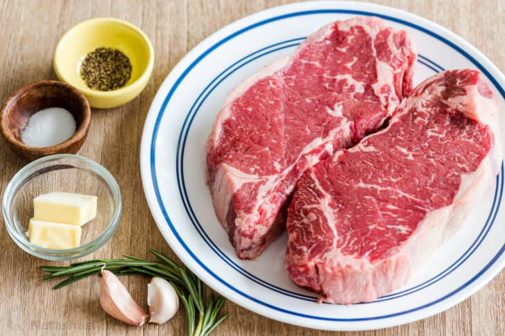
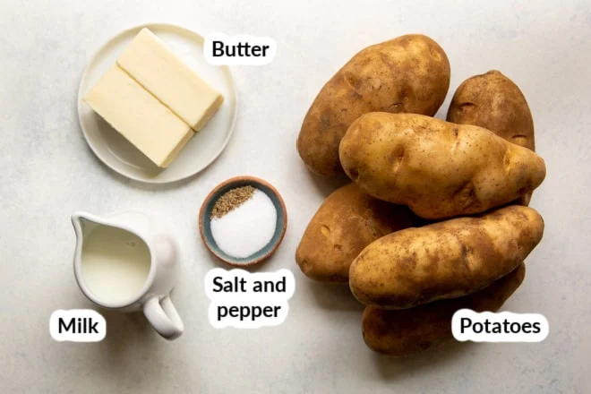

This is a recipe for steak and mash. This is my favourite meal because I feel like it is very simple to make and yet it has so much flavour. Steak is way easier than anyone would ever think it is. I would eat it everyday if I could. It is rich and delicious. On top of that, the texture is so tender. This recipe doesn't include greens, but, I would recommend making a salad or cooking some asparagus as a side. This recipe will feed 2, perfect for a date dinner at home. I would recommend having a nice glass of red wine alongside the meal. This recipe uses the reverse-sear method. I hope you enjoy.

You will need:

